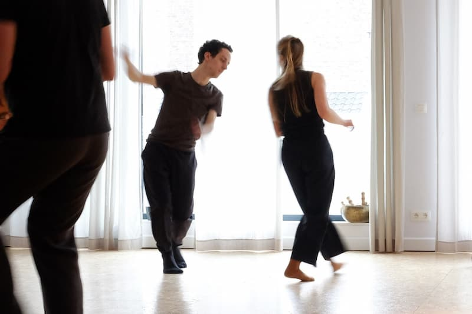
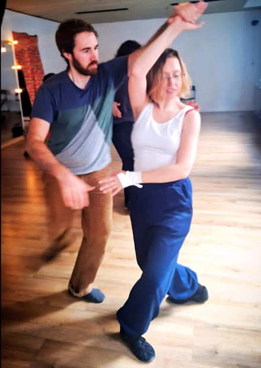
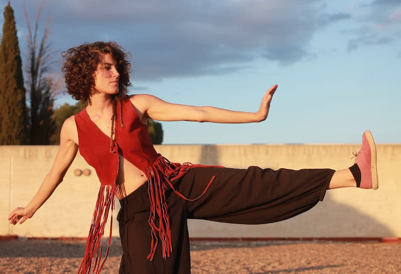
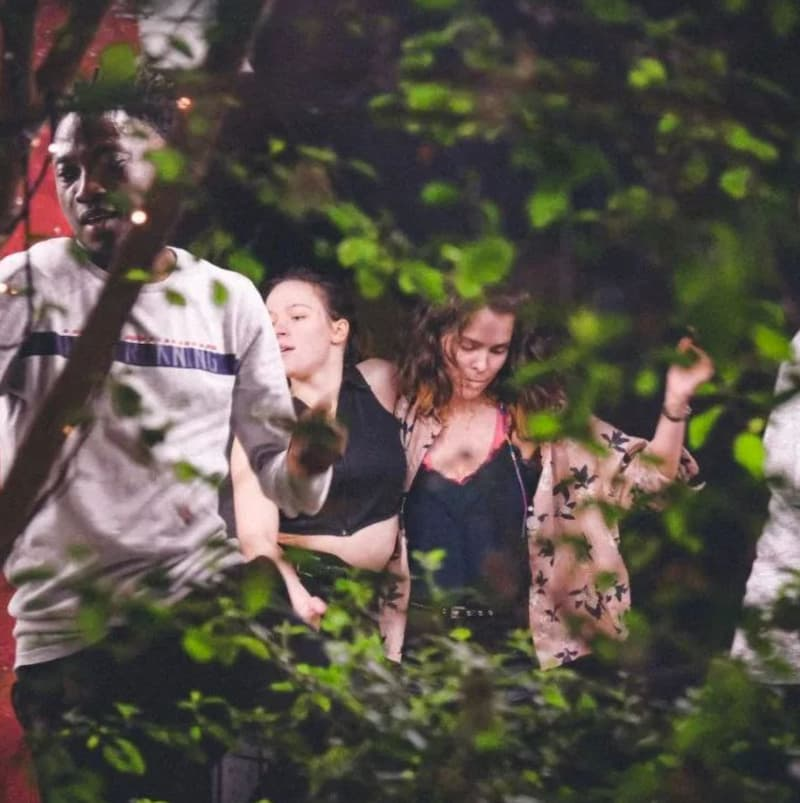
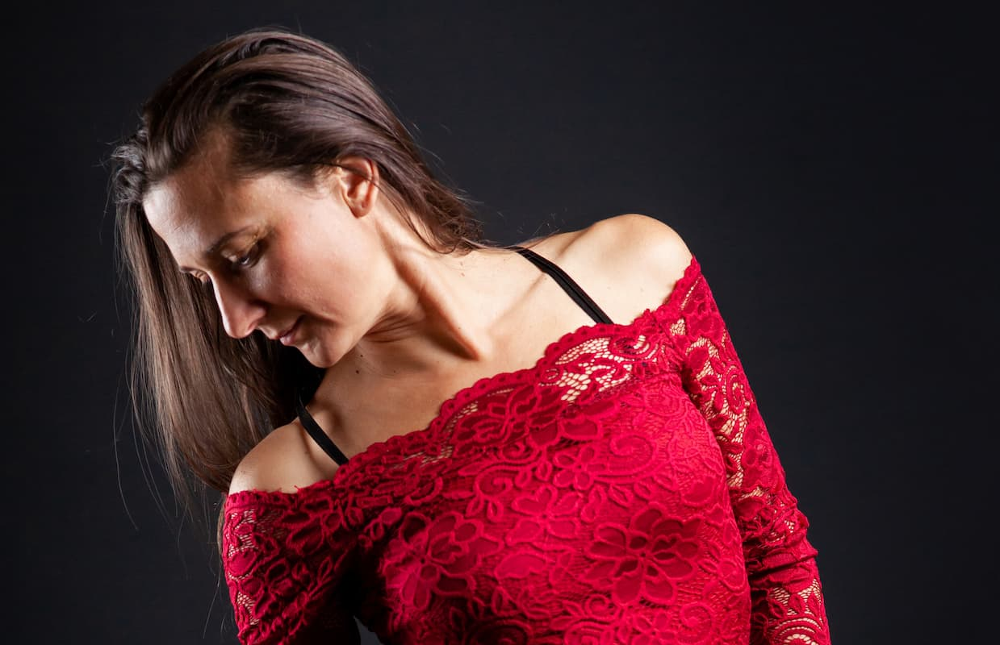

6–8 September
- Dance weekend in Brussels, Belgium,
- 5 workshops: 1 on Friday, 2 on Saturday, 2 on Sunday,
- 2 social dances: on Friday and Sunday,
- Party night on Saturday
Step into the vibrant world of fusion dance at our weekend gathering in Brussels! Join us for an experience where local and neighboring fusion communities converge, creating a dynamic melting pot of creativity. Four workshop sessions promise to enhance your skills and expand your dance horizons. Whether you're a seasoned dancer or a newcomer, seize the opportunity to exchange and forge friendships on the dance floor.
As the sun sets, the energy intensifies with three evening social dances, where you'll immerse yourself in the rhythms of fusion music. Stay tuned for the lineup of artists who will guide you on this enchanting journey. Get ready to dance, connect, and be inspired in the heart of Brussels!
Program
Friday
Kamilou, Rue Joseph II 36
- 18.30 Welcome,
- 19.00-20.00 consent workhop
- 20.00-24.00 social dancing
Saturday
Fuzue, Rue Philippe Le Bon 15:
- 14.00 Welcome,
- 14.15–15.45 dance class,
- 16.00–17.30 dance class.
Labokube, Chau. de Louvain 238:
- 19:00–02.00 Party night + concert.
Sunday
Fuzue, Rue Philippe Le Bon 15:
- 13.00 Welcome,
- 13:15–14:45 dance class,
- 15.00–16.30 dance class,
- 18.00–22.00 social dancing.
Program maybe subject to change.
Workshops
Dynamic consent: negotiating your comfort zone with your partner by Cédric and Nina
In this workshop we will practice how to escalate the dance connection with the confidence that you stay in your partner's comfort zone, as well as how to de-escalate when things go to far for you. How to express and to read intentions to adjust the dance connection? We'll look at what happens when things go well, as well as what to do when your partner isn't receptive to your non-verbal communication.
BodySync: Embrace Yourself, Embrace Each Other by Agnieszka
We will delve deep into the connections within our bodies and the dynamics of partnering in dance. Through a series of immersive exercises and explorations, we will experiment with various movement qualities, communication with a dance partner and develop sensitivity and responsiveness.
Exploring the Counter Balance by Atenea
We will enter into the world of counter balance to understand one of the most precious resources that connection as a couple offers us. The creation of common movement between the two parts from the compensation of weights. We will explain the concept itself and explore its possibilities.
Musicality: choosing your energy by Diana
In Diana's dance class on musicality, we will delve into the art of expressing music through movement. Musicality involves dancing to the beat, yes, but also understanding the subtleties of the different instruments or the emotional nuances of the music. This lesson will help dancers listen, identify various elements of the music, and explore how to embody these elements in their dance through play and emotional exploration. Some content : identifying rhythms, musical phrases, clapping exercises, marking a time with a pose, embodying emotions and energies, applied to couple's dancing.
Cocreating a dynamic and flowing dance by Sandrine
Creating a dynamic, cocreative flowing dance from compression and stretch.
Sundrine, Zouk & Fusion teacher, organizer, DJ, from France, Toulouse
I have a background in couple dances, contemporary, contact
improvisation and I have been teaching couple dances since 1995 in
Toulouse, France. In 2015 I discovered the Brazilian Zouk and it
changed my life!
I love the dance, the community, the kindness of the people, music diversity…. I was totally seduced by Soulzouk as it embraces my dance values: connection, social dance, creativity, respecting individuality of each dancer. I feel blessed to have met China and to be part of the Soulzouk family. I am also MAC certified.
I met Fusion in 2014 and I have been actively participating to spreed it in Europe, starting in Toulouse, France in 2018. I am co-creator/organizer of the Toulouse Fusion Week-End. I am DJing in the Zouk and Fusion monthly events I organize, and in Fusion international events: I especially enjoy chasing new music for Fusion.
DJs
- DJ Atenea, Malaga
- DJ Brian van Nunen, Utrecht
- DJ Diana Deblise, Lille
- DJ Nina, Brussels
- DJ Sun, Toulouse
- DJ The Musical Penguin, Brussels
Venues
- Kamilou—a nice restaurant, food and drink options available next to the dance floor.
- Fuzue—cultural center. Your own food and drinks are welcome.
- Labokube—creative space. Your own food and drinks are welcome. We will offer limited bar service.
Tickets
Full pass:
- Early bird: €90, limited quantity, available until the end of June,
- Regular: €105, limited quantity, available until the end of July,
- Late: €120.
Social dancing pass:
- Saturday party: €20 online or €25 at the door
- Friday or Sunday socials: €10 online / €15 at the door
Contact
Got any questions, suggestions, or want to collaborate? Contact Marcin Wosinek at marcin.wosinek@gmail.com, or by WhatsApp at +34 608 73 92 32.
Are in you interested in this or other events we organize? Join our WhatsApp community.
Code of conduct
For the event, we use the Brussels' community code of conduct.
Terms and conditions
Cancelations
If a dancer cannot participate in the event, the refund is not possible. You can sell your ticket to another person you find, and transfer the ticket to their name.
If the event is canceled, the organizer will return the ticket price, minus ticket platform fee. The organization does not take responsibility for festival relate costs such as travel or accommodation.
Program changes
Some changes to program can happen due to circumstances outside our control. Please check the website to learn about changes.
Photos and videos
The event takes place in a public space, and we will take photos & videos to use for documenting the event and promote future events. If you have an issue with appearing in the pictures or videos, please let us know in advance, and let know the event photographer.